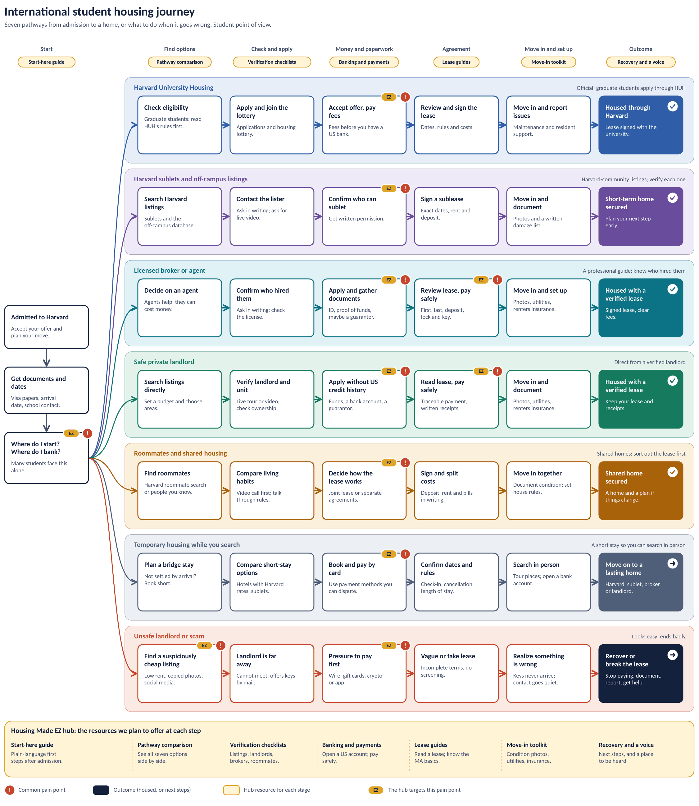

Housing Made EZ · for International Student Groups
Everything you need to land safely at Harvard
Addressing housing challenges faced by international students at Harvard: how to avoid scams, read a lease you've never seen the format of before, open a bank account before you land, and figure out where to actually live.
Start here
Pick the step you're on
Each step of the move has its own page. Follow them in order, or jump to the one you need now.
- 1 · Find options Pathway comparison See your housing options side by side. Where to live →Housemate Navigator →
- 2 · Check and apply Verification checklists Check listings, landlords, brokers and roommates. Avoid scams →
- 3 · Agreement Lease guides Read a lease; know the Massachusetts basics. Your lease →LeaseCheck →
- 4 · Move in and set up Move-in toolkit Furniture, condition photos, utilities, insurance. Furniture board →
- 5 · Outcome Recovery and a voice Next steps, and a place to be heard. Community →
The housing journey
Seven pathways from admission to a home
Every international student takes one of these routes: Harvard University Housing, a Harvard sublet, a broker, a private landlord, shared housing, a temporary stay, or, when things go wrong, an unsafe landlord or scam. Red marks are the common pain points; the gold "EZ" marks are where this site helps.
Process map
Open full size ↗
Download PDF
